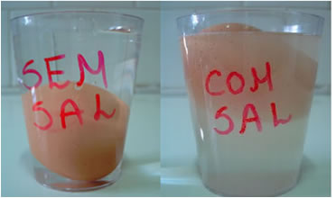

Já reparou que quando colocamos um objeto com certa massa, em outro recipiente com um liquido dentro, as vezes o objeto afunda, flutua ou se mantem no meio? Tal acontecimento se deve à densidade que é o que veremos a seguir.
Para líquidos e sólidos, a unidade mais usada para densidade é g/cm3 (ou g/mL), lembrando que 1 cm3 = 1 mL. Já para gases é mais comum a unidade g/L. Apesar disso, a unidade de densidade no SI (Sistema Internacional de Unidades) é o quilograma por metro cúbico (kg/m3). Assim, quando dizemos, por exemplo, que a densidade do ferro é de 7,86 g/cm3, isso quer dizer que o volume de 1 cm3 de ferro apresenta 7,86g.
So para deixar esclarecido a Unidade De Medida ;)
Agora Vamos à explicação!!!
Um material menos denso flutua sobre um mais denso. O contrário também ocorre, um material mais denso afunda num material menos denso. Além disso, à medida que muda de estado físico, uma mesma substância possui diferentes densidades. Para verificar esses pontos, veja o caso da água. À temperatura ambiente, no estado líquido, ela possui densidade igual a 1,0 g/cm3. À medida que ela vai congelando, as suas moléculas realizam ligações de hidrogênio, ficando dispostas tridimensionalmente de forma organizada, numa grade cristalina com espaços vazios.  O resultado é que a densidade do gelo fica menor (0,92 g/cm3) que a da água e flutua quando colocado nela.
É interessante que o gelo não fica totalmente acima da superfície da água, mas a maior parte fica abaixo dela. Isso acontece porque se compararmos a densidade do gelo (0,92 g/cm3) com a da água (1,0 g/cm3), veremos que é necessário apenas 92% do volume do gelo para igualar a massa de água que ele desloca. Dessa forma, 92% do volume do gelo fica abaixo da superfície da água; e apenas 8% ficam acima da superfície. Porém, se colocarmos o gelo num copo com bebida alcoólica, verificaremos que o gelo não flutua, mas afunda.
Isso ocorre porque, conforme já foi dito, a densidade do álcool é de 0,79 g/cm3, ou seja, é menor que a do gelo. Se adicionarmos água ao álcool, a sua densidade vai aumentando gradativamente. Isso mostra que, em misturas, as densidades das substâncias mudam. Por exemplo, se adicionarmos sal na água, a sua densidade irá aumentar. Isso pode ser visualizado no caso do Mar Morto, que possui alta concentração de sal dissolvido em sua água, tendo densidade de 1,35 g/cm3. É por isso que qualquer pessoa flutua em suas águas; caso fosse em um rio comum, só não afundaria quem sabe nadar.
Da fórmula da densidade, temos:
Veja um exemplo de como usar a fórmula da densidade para resolver problemas:
Em condições ambientes, a densidade do mercúrio é de aproximadamente 13 g/cm3.
A massa desse metal, necessaria para encher completamente um frasco de 7 litros de capacidade, é de?
Resolução:
Caso ainda tenha algumas duvidas veja essa video-aula!!!
Hoje sabemos que a luz é composta por diminutas partículas. Tais partículas são denominadas de fótons e com isso em mente vamos apresentar as caracteristicas dos mesmos. Nos dias de hoje, mantem-se a idéia de que a luz tem uma natureza corpuscular. Newton, há muitos séculos, ao retomar a discussão sobre a natureza da luz, defendia a natureza corpuscular do mesmo. Pórem tal teoria foi esquecida por algum tempo por causa da descoberta de fenômenos ondulatórios associados à luz.
Sempre que você estiver em contato com a luz, qualquer luz (do Sol, das estrelas, da lâmpada elétrica etc), você estará em contato com essas partículas elementares(fótons). Isso porque, hoje sabemos, a luz é composta por essas partículas minusculas.
Essas partículas, os fótons, estão em todo o Universo com certeza e em todas as suas regiões com a mesma abundância. Eles são muito numerosos no Universo e excedem em muito as demais partículas. Na realidade, quando falamos dos fótons estamos falando não de um ou dois, mas de bilhões e bilhões. Se os fótons são tão numerosos, por que não sentimos os seus efeitos? Na realidade, podemos sentir os efeitos associados à presença de grande número de fótons. Por exemplo, só podemos ver se tivermos luz à nossa disposição. Fótons com energia compreendida entre dois valores (os quais explicaremos depois), e desde que em grande número, compondo uma onda eletromagnética, são capazes de sensibilizar um dos nossos sentidos (o da visão). Outro exemplo são as plantas na qual a sua coloração esverdeada se vem do fato de que elas não reagem muito bemm ao comprimento de onda que gera a cor verde, refletindo assim essa cor.
Finalmente, no início do século XX, em 1905, existiu alguém que comprovou a dualidade onda-partícula da luz, explicando satisfatoriamente o efeito, dando o nome a partícula luminosa de fóton, esse cientista foi Albert Einstein(tinha que ser ele né !), explicou o efeito fotoelétrico que o rendeu um prêmio Nobel pelo feito. Anteriormente, Max Planck já havia realizado pesquisas a respeito também.
O fóton, como qualquer partícula, possui uma certa energia, e a relação energia (E) e frequência (f), é proporcional e está relacionada por uma constante, a constante de Planck (h), dada pela equação abaixo:
E = hf
A equação acima é usada para calcular a energia de um fóton quando é dada a freqüência. Nessa equação a energia (E) é calculada em Joule quando o valor de (h) é substituído com o primeiro valor, em (eV) quando a constante de Planck(h) é substituído pelo segundo valor acima.
A velocidade de uma onda é calculada por v = λf. Dessa equação podemos tirar a frequência f = v/λ e substituir na equação da energia para encontrarmos uma nova equação para o calculo da energia a partir do comprimento de onda.
Podemos entender melhor essa explicação atraves de um atomo!
Exemplo:
Um atomo é composto de eletrons, protons , neutrons e outras coisas. Quando um eletron de um atomo salta de um nivel energetico mais elevado para um nivel energetico menos elevado, ele libera energia e essa energia que gera as cores que nós vemos, essa liberação de luz foi denomida como foton! Então uma forma de entendermos melhor é utilizando essa ideia para tentar ver qual a cor que sera vista quando um atomo salta de um nivel mais (elevado), para um nivel menos (elevado).
Para isso primeiro devemos calcular a ΔE de um eletron que é o (O nivel menos elevado) - (O nivel mais elevado).
O calculo para essa conta é o seguinte: colocaremos Efinal > para o nivel menos elevado ---- Einicial > para o nivel mais elevado
((-2,18*10-18)/Efinal2) - ((-2,18*10-18)/Einicial2)
O resultado sera a energia liberada e com essa energia acharemos o comprimento de sua onda utilizando as seguintes informaçoes!
Logo para se achar o comprimento da onda fazemos, λ = h*c/ΔE --- *Lembrando que o resultado deve ser dado em nanometros que é 10-9.